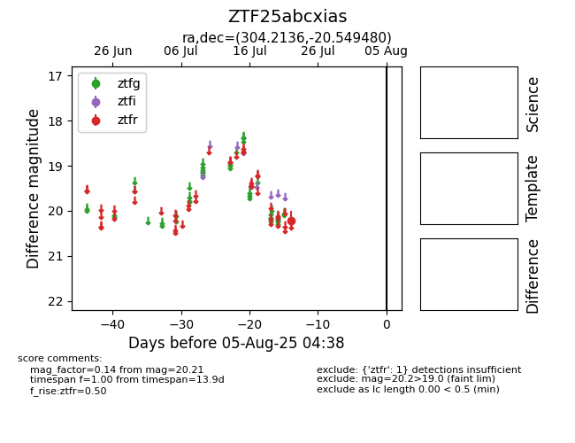

Target ZTF25abcxias at 2025-08-05 04:38, see:
FINK: fink-portal.org/ZTF25abcxias
Lasair: lasair-ztf.lsst.ac.uk/objects/ZTF25abcxias
ALeRCE: alerce.online/object/ZTF25abcxias
alt names
ZTF25abcxias (ztf,fink)
coordinates:
equatorial (ra, dec) = (304.2136,-20.54948)
galactic (l, b) = (22.7310,-27.61381)
photometry
last ztfr=20.21
1 ztfr detections
